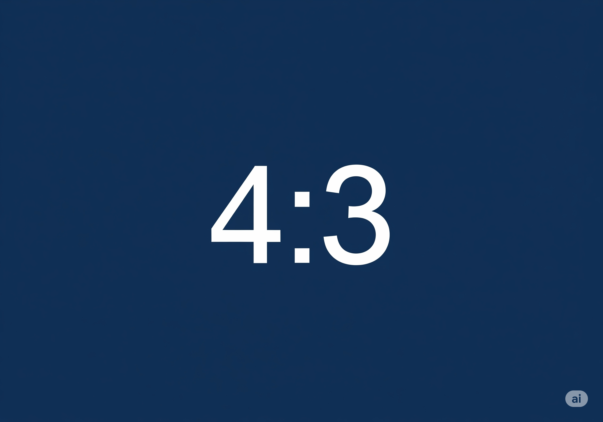

この合宿では、学生と子どもたちが「今この瞬間、やりたいことや向き合うことにひたむきに取り組む」ことを通して、以下のような関係性や経験が生まれることを目指しています。
合宿が終わった時には、「あの時は夢中になって頑張れた」と振り返られるような、楽しい思い出をたくさん作りたいと考えています。
そして、その経験が日常に戻った時、「あの時できたから今回も頑張ってみよう」「こんなことで挫けていられない」と、次へ進むエネルギーになることを願っています。